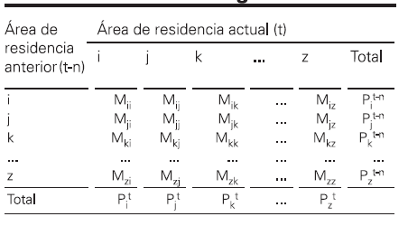

2. Formulario demografía#
2.1. Tema 1. Principios Generales.#
Linea de vida. Dentro de un diagrama de Lexis, linea paralela a la
recta Y=X que representa la historia demográfica de un individuo.
Corresponde con la tercera dimensión temporal del diagrama.
Cohorte. Conjunto de lineas de vida que comparten experiencia dentro
de un determinado período temporal.
Generación. Cohorte nacicida en un determinado año.
Promoción. Cohorte de matrimonios.
Stock. Recuento de efectivos en un momento temporal determinado.
Registran estructuras y se representan como segmentos verticales en el
diagrama de Lexis.
Flujo. Fenómeno que modifica el tamaño, la estructura o la
composición de una población. Afectan a un período de tiempo. Se
representa como una superficie en el diagrama de Lexis.Tipos:
Aniversario. Se representa como un segmento horizontal en el diagrama de Lexis.
Renovable/ no renovable. Puede, o no, darse más de una vez.
Ineludible o fatal. Todo individuo pasa por el suceso.
Irreversible. Supone un cambio de estado sin vuelta atrás.
Observaciones según la dimensión temporal
Por período-edad. Combinan en un mismo año de calendario y edad las experiencias de dos generaciones.
Por cohorte-edad. Clasifica los acontecimientos por año de nacimiento y edad afectando a dos años de calendario.
Por período-cohorte. Clasifica los eventos por el año de calendario en que acontecen y la generación de pertenencia del individuo, por lo que incluye dos edades.
Doble clasificación. Tiene en cuenta las tres dimensiones.
Análisis longitudinal vs. análisis transversal
Transversal Longitudinal
Rápidos de conducir Tiempo más prolongado Período de tiempo determinado Observación en diferentes intervalos de tiempo No ofrecen relación causa efecto Ofrecen relación de causa y efecto Observación de diferentes variables en un solo momento Observación o estudio de una única variable Más económicos Más costosos
Intensidad y Calendario
Intesidad. Mide cuántas veces se produce un fenómeno estudiado en el
curso del ciclo de vida de una generación. Tal frecuncia suele medirse
como el valor medio para cada componente de la generación.
Así se dirá que el suceso S para una generación t en España a tenido
una intesidad:
Mortalidad: igual a 1, es decir, el suceso muerte afecta a toda la población.
Nupcialidad: igual a 0.9, es decir, solo el 90% ha contraido su primer matrimonio.
Fecundidad: igual a 4, es decir, han sido traidos una media de 4 hijos por persona.
Movilidad: igual 1.5, es decir, cada individuo ha cambiado de residencia al menos 1 vez y media en promedio.
Calendario. Distribución por edad del fenómeno durante el ciclo de
vida. Suele determinarse estadísticamente mediante índices sintéticos de
calendario.
Tomando el ejemplo anterior:
La edad media a la muerte son 60 años.
La edad media al matrimonio son 25 años.
La edad media a la maternidad son 30 años.
Tasas\
Tasa Bruta: \(\frac{Suceso(t, t+1)}{Población(1/7/t)}\).\
Tasa Específica:
) Período-edad: \(m_x^{t,t+1}=\frac{S_x^{t,t+1}}{0.5(P_x^t+P_x^{t+1})}\).
) Período-cohorte: \(m_g^{t,t+1}=\frac{S_g^{t,t+1}}{0.5(P_g^t+P_g^t+1)}\).
) Cohorte-edad: \(m_x^g=\frac{S_g^{t,t+1}}{P_x^{t,t+1}}\).
Cocientes o probabilidades\Entre aniversarios: \(q_x^g=\frac{S_x^g}{N_x^g}\).\
Perspectiva: \(z_g^t=\frac{S_g^{t,t+1}}{P_g^t}\).
Relaciones\Edades exactas: \(r_x^g=\frac{S_x^g}{N_{x+1}^g}\).\
Años cumplidos: \(R_g^t=\frac{S_g^{t,t+1}}{P_g^{t+1}}\).
2.2. Tema 2. Mortalidad.#
**Tasa bruta de mortalidad:**TBM:\(\frac{D^{t,t+1}}{0.5(P^t+P^{t+1})}\)
Tasa específica de
mortalidad:\(m_x^t=\frac{D^{t,t+1}_x}{0.5(P_x^t+P_x^{t+1})}\)
Componentes de una tabla de mortalidad
Probabilidad de muerte: \(q_x^n=\frac{2nm_x^n}{2+(nm_x^n)}\)
Probabilidad de supervivencia: \(p_x^n=\frac{l_{x+n}}{l_x}=1-q_x^n\)
Supervivientes a edad exacta: \(l_{x+n}=l_x-(l_xq_x^n)\) con \(l_0=100.000\)
Defunciones a edades exactas: \(d_x^n=l_x-l_{x+n}=l_xq_x^n\) con \(d_{w^+}=l_w\)
Cociente de reparto de las defunciones: \(a_x^n=\frac{L_x^n-(nl_{x+n})}{l_x-l_{x+n}}\)
Población estacionaria: \(L_x^n=n[(l_xa_x^n)+(l_{x+n}(1-a_x^n))]\) con \(L_{w^+}=\frac{l_w}{m_{w^+}}=l_we_w=T_w\)
Tiempo vivido: \(T_x=\sum_{i=x}^w=L_i^n\)
Esperanza de vida: \(e_x=\frac{T_x}{l_x}\) con \(e_{w^+}=\frac{1}{m_{w^+}}\)
Probabilidad prespectiva de paso: \(Z_x^n=\frac{L_{x+n}^n}{L_x^n}\) con
\(Z_n=\frac{L_0+L_1^4}{5l_0}\)
\(Z_0=\frac{L_5^5}{L_0L_1^4}\)
\(Z_{w^+}=\frac{L_{w^+}}{L_{w-n}^n+L_{w^+}}\)
Mortalidad infantil
Mortalidad neonatal (0-27 días)
Mortalidad postneonatal (28 días - 1 año)
Mortalidad de neonatalidad precoz (0-7 días)
Mortalidad de neonatalidad tarías (8-27 días)
Mortalidad fetal tardía: \(MFT^t=\frac{MuertesFetalesTardías^t}{NV^t+MuertesFetalesTardías^t}\)
Mortalidad Perinatal: \(MP^t=\frac{MuertesFetalesTardías^t+d_{0-27}^t}{NV^t+MuertesFetalesTardías^t}\)
Causas de mortalidad infantil: 1)Fragilidad ante el medio \(\downarrow\), 2)Factores genéticos y hereditarios \(\uparrow\) y 3)Riesgos inherentes al momento del parto.
2.3. Tema 3. Natalidad y Fecundidad.#
Natalidad. Frecuencia de nacimientos ocurridos en una población
tomada en su conjunto.
Fecundidad. Frecuencia de naciminetos pcurridos en un subconjunto de
la población en edad de procrear.
Principales fuentes: 1)Movimiento Natural de la Población Española, 2)
recuentos de población, 3)censos de población y 4) Padrones
Municipales.
Medidas de Fecundidad de momento o transversal.\
Tasa Bruta de Natalidad: \(TBN^t=\frac{NV^t}{P^{30/6/t}}*1000\). Tasa de segunda categoría, escaso nivel de expresividad y fiabilidad.\
Tasa General de Fecundidad: \(TGF^t=\frac{NV^t}{PFem^{30/6/t}_{15-49}}*1000\). Menos influida por la composición de la población.\
Tasas Específicas de Fecundidad: \(TEF^t_x=\frac{NV_x^t}{PFem_x^{30/6/t}}*1000\). Representaciones gráficas de gran ayuda para comparar).\
Índice Sintético de Fecundidad: \(ISF^t=\frac{\sum_x TEF^t_x}{1000}\). También llamado nº Medio de Hijos por Mujer, se puede calcular como \(ISF^t=\frac{TGF*35}{1000}\).\
Edad Media al ser Madre: \(\hat{a}^t=\frac{\sum_x (x+ n/2)TEF^t_x}{\sum_x TEF_x^t}\).
*También existen las medias de 2-4 para el subconjunto de la población en matrimonio y en “no matrimonio”. Se calculan igual, simplemente se añade la restricción de nacidos vivos dentro/fuera del matrimonio y población fememnina casada/no casada.\Tasa Bruta de Reproducción. \(TEF_{f,x}^t=\frac{NVFem_x^t}{PFem_x^{30/6/t}}*1000 \rightarrow TBR^t=\sum_x TEF_{f,x}^t*\frac{n}{1000}\).
7)Tasa Neta de Reproducción: \(TNR^t=\sum _x (TEF_x^t*\frac{L_{x,5}}{l_0}*(\frac{NVFem^t}{NV^t}))\)
Medidas de Fecundidad de cohorte o longitudinal\Tasas Específicas de Fecundidad de una Generación: \(TEF_{coh_y}=\frac{NV_{coh_y}}{PFem_{coh_y}}*1000\).\
Descendencia final: \(DF_{coh}=\sum_yTEF_{coh_y}\). Nº medio de hijos de mujeres de una generación que habrían nacido al terminar su vida reproductiva.
2.4. Tema 4. Migraciones.#
Migraciones. Cambio de residencia desde una unidad espacial administrativa a otra, en un intervalo de tiempo medido a priori.
Clasificación de las migraciones:
Temporales.
Definitivas.
Internas:
Intermunicipales.
Interprovinciales.
Intercomunitarias.
Internacionales.
2.4.1. Medidas indirectas de la migración.#
Ecuación compensadora.
\(P^{t+n}=P^t+N^{t,t+n}-D^{t,t+n}+I^{t,t+n}-E^{t,t+n}\)
Despejando
\((I^{t,t+n}-E^{t,t+n})=(P^{t+n}-P^t)-(N^{t,t+n}-D^{t,t+n}) \equiv\)
MigraciónNeta=CrecimientoReal - CrecimientoNatural/Vegetativo.
2)Método de la población prevista o de los supervivientes.
\(MN_x=P^{t+n}_{x+n}-S_xP^t_x\) con
\(MN_0=P^{t+n}_n-S_{0,n}N^{t,t+n}\) y
\(S_{x,x+n}=\frac{L_{x+n, x+n+5}}{L_{x,x+5}}\).
**Es muy probable que no haya tablas de mortalidad de la zona, por ello, una vez sabido el nivel de mortalidad se pueden usar tablas de mortalidad tipo, sobre todo las de Princeton.
2.4.2. Matrices Migratorias.#
\(M_{i,j}=\) Migraciones de la zona i hacia la zona j
\(M_{i,j}+M_{j,i} =\) Migración bruta entre las zona i y j
\(M_{i,j}+M_{j,i} =\) Migración neta o saldo migratorio entre las zona i y j

Nº inmigrantes en I: \(I_i=P_i^t-M_{i,i}\)
Nº emigrantes en j: \(E_j=P_j^{t-n}-M_{j,j}\)
2.4.3. Proporciones.#
Índice de aloctonía (proporción de población no nativa)
(NN= No nativos)
Proporción de emigrantes (Proporción emigrantes respecto población al inicio)
Proporción de inmigrantes
2.4.4. Medidas directas de la migración.#
Tasa de Migración Neta (Migración neta=I-E):
\(TMN^{t,t+n}=\frac{MN^{t,t+n}}{0.5(P^t+P^{t+n})}\). Es una tasa bruta!!
1.1) Tasa bruta de inmigración Exterior
1.2) Tasa bruta de Emigración Exterior
Tasa de Migración Neta por Edades:
\(TMN^{t,t+n}_{x,x+n}=\frac{MN^{t,t+n}_x}{0.5(P^t_x+P^{t+n}_{x+n})}\).
Tasa Bruta de Emigración:
\(m^{t,t+n}=\frac{1}{n}*\frac{E^{t,t+n}}{0.5(P^t+P^{t+n})}*1000\). El numerador son emigraciones.
Índice de Atracción: \(i^{t,t+n}=\frac{1}{n}*\frac{I^{t,t+n}}{0.5(P^t+P^{t+n})}*1000\). Esta “tasa de imigración” no es una tasa, es una proporción, ya que la la población a riesgo no forma parte del denominador.
Tasa Específica por Edades: \(m^{t,t+n}_{x,x+n}= \frac{M^{t,t+n}_{x,x+n}}{P_{x}}\). El numerador son migraciones y denominador población al comienzo del período.
Índice sintético de Migración (calendario migración. \(ISM=n*\sum_x m_{x,x+n}\). Como la migración es un suceso renovable este indicador puede ser mayor a 1.
2.4.5. Edad media Inmigrantes/Emigrantes#
Edad media inmigrantes provenientes extranjero \(EMI^{t}=\frac{\sum_{x=0}^{90+}(x+0.5)\cdot I_{x}^{t}}{\sum_{x=0}^{90}I_{x}^{t}}\)
Edad media Emigración al Extranjero \(EME^{t}=\frac{\sum_{x=0}^{75+}(x+0.5)e_{x}^{t}}{ICE^{t}}\)
2.4.6. Corrientes migratorias#
Tasa de emigración parcial (entre i y j):\(m_{i}^{E}=\frac{M_{i,j}}{P_{i}}\cdot1000\)
Tasa de inmigración parcial (entre i y j): \(m_{i}^{I}=\frac{M_{i,j}}{P_{j}}\cdot1000\)
Tasa Bruta de intercambio: \(TBI_{ij}=\frac{M_{ij}+M_{ji}}{P_{i}+P_{j}}\cdot1000\)
Tasa neta de intercambio: \(TNI_{ij}=\frac{M_{ij}-M_{ji}}{P_{i}+P_{j}}\cdot1000\)
Índice de compensación: \(Indie\ compensaci\acute{o}n=\frac{M_{ij}-M_{ji}}{M_{ij}+M_{ji}}=\frac{Saldo\ neto}{Migraci\acute{o}n\ bruta}\)
Índice migración diferencia: \(d_{x}=\frac{E_{x}\cdot P}{E\cdot P_{x}}-1\)
2.5. Tema 5. Estructura y Crecimiento#
NOTA: Una buena relación de indicadores de este tipo se puede encontrar en https://www.ine.es/metodologia/t20/metodologia_idb.pdf
2.5.1. Indicadores de estructura.Por: Sexo, edad y lugar de nacimiento.#
Sexo:
Ratio de Masculinidad: \(RM^t=\frac{PMasc^t}{PFem^t}*100 \rightarrow\)
Ratio de Feminidad: \(RF^t=\frac{1}{RM^t}\).
Proporción de Hombres/Mujeres: \(\frac{PMasc^t}{P^t}\) o \(\frac{PFem^t}{P^t}\).
Edad:
Edad Media: \(EM^t=\frac{\sum_x (x+0.5)P_x^t}{\sum_x P_x^t}\).
Edad Mediana: \(EMed^t=edad_{med}^t+\frac{(P^t/2)-P^t_{[0,med-1]}}{P^t_{med}}\).
Prop. de Mayores a Cierta Edad: \(Prop^t_{x^+}=\frac{P^t_{x^+}}{P^t}*100\).
Índice de envejecimiento: \(IE^t=\frac{P^t_{65^+}}{P^t_{0-15}}*100\).
Tasa de Dependencia: \(TD^t=\frac{P^t_{0-15}+P^t_{65^+}}{P^t_{16-64}}*100\).
Tasa de Dependencia de Jovenes: \(TDJ^t=\frac{P^t_{0-15}}{P^t_{16-64}}*100\).
Tasa de Dependencia de Mayores: \(TDM^t=\frac{P^t_{65^+}}{P^t_{16-64}}*100\).
índice de Longevidad: \(\frac{P_{85+}}{P_{65+}}\cdot100\)
Lugar de Nacimiento:
Prop. de Pob. Nacida en el Extranjero: \(Prop^t_{ne}=\frac{P^t_{ne}}{P^t}*100\).
Prop. de Pob. Extranjera: \(P_e^t=\frac{P^t_e}{P^t}*100\).
2.5.2. Pirámide de población.#
Está formada por dos histogramas de barras horizontales enfrentados, donde la superficie de cada barra representa el peso del correspondiente grupo de edad y sexo. La edad se representa en el eje de ordenadas (Y) y los efectivos de cada edad en el de abscisas (X), con hombres a la izquierda y mujeres a la derecha.
Tipos de pirámides:
Base ancha y muy escalonada. Alta mortalidad y natalidad, propia de países subdesarrollados.
Base estrecha y poco escalonada. Retroceso de natalidad y mortalidad, propia de países desarrollados.
Infancia y vejez más numerosa que en madurez. Propia de migraciones o guerras.
2.5.3. Indicadores de Crecimiento.#
Tasa de Crecimiento Natural: \(SV^t=\frac{N^t-D^t}{PM^t}*1000\).
Tasa de Migración Neta con el Extranjero: \(SM^t=\frac{I^t-E^t}{PM^t}*1000\).
Crecimiento de la población por 1000 habitantes: \(CT^t=\frac{P^{1-1-(t+1)}-P^{1-1-t}}{P^{1-7-t}}*1000\).
Nacidos por cada 1000 defunciones: \(RND^t=\frac{N^t}{D^t}*1000\).
2.5.4. Envejecimiento de la población.#
Proceso de cambio de estructura de la población que se manifiesta por un descenso en las primeras edades y un aumento en los últimos grupos de edades. Se da principalmente en los países desarrollados:
Por la base: descenso de la natalidad o emigración de la población joven.
Por la cúspide: Aumento de la esperanza de vida.
Problemas producidos por el envejecimiento de la población:
Crecimiento excesivo de la relación numérica entre mayores y adultos.
Progresivo envejecimiento de la masa laboral.
Crecimiento poblacional puede volverse negativo.
2.5.5. Población estacionaria y población estable#
Población estable la que resulta de una cifra anual de nacimientos que varía a una tasa constante, sin cambiar la tabla de mortalidad. Esto implica una estructura por edad de la población invariable.
Población estacionaria sería una población estable en la que la tasa de crecimiento natural es nula.
2.6. Tema 6. Proyecciones de la Población.#
Tanto los agentes públicos y privados necesita estimaciones y
proyecciones de la población para su actividad planificadora. Esta tarea
es más sencilla cuanto mayor sea la población a estimar. No obstante,
debido a lo imprevisible de la migración, incluso a nivel nacional puede
ser una tarea complicada.
Hay que distinguir dos conceptos:
Previsiones. Su objetivo es “acertar” la evolución futura de la población, incorporando tendencias probables basadas en el pasado para proporcionar escenarios posibles.
Proyecciones. Su objetivo es proporcionar una simulación de la evolución bajo ciertos supuestos, aunque estos no sean muy verosímiles. Tipos de proyecciones:\
A corto plazo (\(<\) 5años).\
A medio plazo (5-20 años).\
A largo plazo (\(>\) 20años).\
Retroproyecciones (pasado).
** En el INE a nivel nacional proyecta a 50 años y, a nivel CCAA y provincias a 15 años.
Proyección del INE 2020-2070
Las proyecciones del INE se basan en el método de las componentes y la
ecuación compensadora. Además, desde 2018, se cuenta con hipótesis
diferenciadas por lugar de nacimiento por tener comportamientos tan
distintos.
Proyección de la mortalidad. En ausencia de catástrofe natural, o guerra, es el componente menos problematico, pero el envejecimiento de la población se ha convertido en un suceso de gran interés.
El INE en las proyecciones de 2020/2070 utilizó hipótesis de variabilidad, proyectando la esperanza de vida al nacimiento y derivando las tasas de mortalidad desde una tabla tipo. Se aplican las mismas hipótesis para los nacidos en España y el extranjero.Proyección de la fecundidad. El método consiste en establecer hipótesis sobre la evolución futura del nivel general de fecundidad, sintetizado por el índice sintético de fecundidad o número medio de hijos por mujer, y de los parámetros que describel la distribución por edad. Estas hipótesis sí se plantean diferente depndiendo del lugar de nacimiento.
Proyección de la migración. Es el suceso más difícil de proyectar, por ello, a veces, se opta por proyectar en ausencia de migraciones.
El INE optó por proyectar separada la inmigración y la emigración exterior, y a su vez cada uno de ellos en nacidos en España y en el extranjero. Esto se debe a la naturaleza y dinámica tan disinta de los sucesos.
2.7. Tema 7. Hogares.#
Hogar. Existen dos enfoques posibles:
Hogar-Vivienda. Usado en la Encuesta de Población Activa.
Hogar-Presupuesto. Usado en la Encuesta de Condicienes de Vida y en la Encuesta de Condiciones de Vida.
Estructura de Hogares.\
Tamaño del hogar o número de individuos en el hogar:
Tamaño medio del hogar: \(TMH^t=\frac{P^t_{ViviendaFamiliar}}{H^t}\). Tendencia decreciente en países desarrollados.
Tasa Bruta de la Persona de Referencia: \(TBPR^t=\frac{PR^t}{P^t_{ViviendaFamiliar}}\).
) Según su composición. Los anteriores calculos se pueden realizar
distinguiendo entre aquellos hogar sin parentesco o familias. A su vez,
por sexo y edad de algunos de sus miembros. Además, se pueden añadir
otro tipo de variables de clasificación si fuera necesario.
Análisis dinámico de hogares.
Se puede realizar de dos formas posibles:
Transversal. Comparación de stocks en dos momentos diferentes.
Longitudinal. Medida de los flujos de eventos o cambios en las situaciones de convivencia en unos hogares de partida.
Se pueden distinguir tres componentes:
Variación de nº de hogares. A parición o extinción de hogares.
Modificaciones del tamaño o composicion. Pueden implicar o no cambio de tipología.
Cambios en la estructura general.
Un indicador de la dinámica de hogares es el Crecimiento del número de
hogares: \(CH^t=H^{t+k}-H^t\).
Hay ciertos sucesos como la natalidad que no afectan, en cambio, la
mortalidad sí en el caso de personas que vivan solas. Referente a la
migración, en el caso de hogares completos sí afecta, sin embargo, si
son hogares multipersonales no.
Eventos demográficos en la dinámica de hogares:
Emancipación. Tasa de Emancipación acumulada: \(TEA^t_x=\frac{PEman^t_x}{P_x^t}\) con \(x \in [18,39]\).
Nupcialidad.
Extinción de hogares. Normalmente de hogares unipersonales de individuos de avanzada edad, ya sea por traslado a una vivienda colectiva (residencia), reintegrarse con los hijos, u otro familiar, o por fallecimiento.
Ciclo de vida de un hogar.
Formación \(\rightarrow\) Expansión \(\rightarrow\) Estabilidad
\(\rightarrow\) Contracción \(\rightarrow\) Nido Vacio \(\rightarrow\)
Extinción.
**Esquema general, se puede ver truncado por ejemplo por la ruptura de
la pareja o su reconstrucción.
2.8. Tema 8. Nupcialidad y Divorcialidad.#
Nupcialidad. Fenómeno demográfico relativo a la formación y
disolución de matrimonios.
Tasas e indicadores de Nupcialidad\
Tasa Bruta de Nupcialidad: \(TBN^t=\frac{M^{t,t+n}}{0.5(P^t+P^{t+n})}*1000\).\
Tasa General de Nupcialidad: \(TGN^t=\frac{M^{t,t+n}}{0.5(P^t_{15^+}+P^{t+n}_{15^+})}*1000\).\
Tasa de Nupcialidad: \(TN^t=\frac{C^{t,t+n}}{0.5(P^t+P^{t+n})}*1000\). Se puede calcular por edades: \(TN^t_x\) con \(x\in[14, 60]\).\
Indicador Sintético de Nupcialidad: \(\sum_{x=14}^{60}\frac{C^{t,t+n}_x}{0.5(P^t_x+P^{t+n}_x)}=(\sum_{x=14}^{60} TN_x^t)*\frac{1}{1000}\).\
Edad Media al Matrimonio: \(EMN^t=\frac{\sum_{x=14}^{60} (x+\frac{n}{2})TN_x^t}{\sum_{x=14}^{60} TN_x^t}\).\
Tasa de Primo-Nupcialidad: \(TPN^t=\frac{C_s^t}{0.5(P^t_s+P^{t+n}_s)}\). Se puede calcular por edades: \(TPN^t_x\) con \(x\in[14, 60]\).\
Indicador Sintético de Primo-Nupcialidad: \(\sum_{x=14}^{60}\frac{C^{t,t+n}_{s,x}}{0.5(P^t_{s,x}+P^{t+n}_{s,x})}=(\sum_{x=14}^{60} TPN^t_x)*\frac{1}{1000}\).\
Edad Media de Primo-Nupcialidad: \(EMPN^t=\frac{\sum_{x=14}^{60}(x+\frac{n}{2})TPN_x^t}{\sum_{x=14}^{60}TPN_x^t}\).
Tasas e indicadores de Divorcialidad\Tasa Bruta de Divorcialidad: \(TBD^t=\frac{D^t}{0.5(P^t+P^{t+n})}*1000\).\
Porcentaje de Divorcios según la Duración del Matrimonio: \(PD^t_x=\frac{D^t_x}{D^t}*1000\).\
Tasa de Divorcialidad: \(TD^t=\frac{CY^t}{0.5(P^t+P^{t+n})}*1000\). Se puede calcular por edades \(TD_x^t\) con \(x\in[19,75]\).\
Indicador Sintético de Divorcialidad: \(ICD^t=\sum_{x=19}^{75}\frac{CY^t_x}{0.5(P^t_x+P^{t+n}_x)}=(\sum_{x=19}^{75}TD_x^t)*\frac{1}{1000}\).\
Edad Media al Divorcio: \(EMD^t=\frac{\sum_{x=19}^{75}(x+\frac{n}{2})TD_x^t}{\sum_{x=19}^{75}TD_x^t}\).
Relación entre Fecundidad y Nupcialidad
Son conceptos demográficos muy relacionados entre si, por norma general, los nacimientos ocurren dentro de los matrimonios. En los últimos años, y sobre todo en países desarrollados, esta situación ha cambiado y el estudio de la fecundidad legítima ha perdido fuerza.
Principalmente hay dos indicadores en esta relación:
Tasas específicas de fecundidad marital e indicadores sintéticos de fecundidad marital.
Porcentaje de nacidos de madres no casadas: \(PN^t_{mnc}=\frac{N^t_{mnc}}{N^t}*100\).
Tradicionalmente, también, se calculaban los intervalos intergenésicos (miden el período entre nacimientos de hijos de la misma madre). Actualmente, ya no tiene interés.